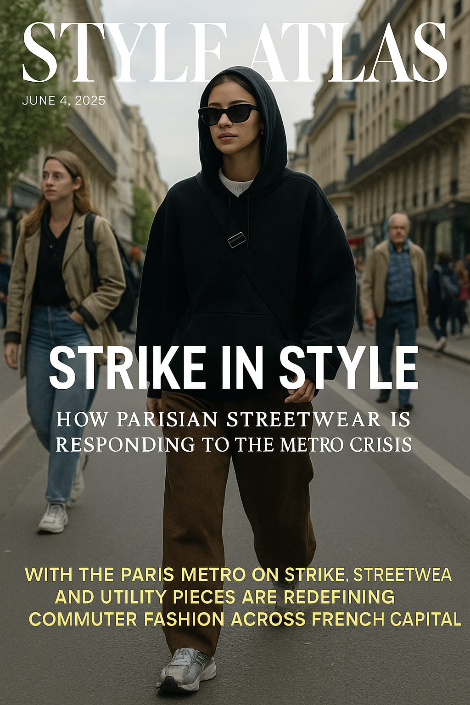

Strike in Style: How Parisian Streetwear Is Responding to the Metro Crisis
With the Paris Metro paralyzed, the city's sidewalks have become the new catwalk—and comfort has never looked so sharp.
This week, Paris woke up not just to protests or closed stations, but to a cultural shift in motion. As the city’s iconic Metro system faced a large-scale strike, disrupting almost every line from Line 1 to RER B, Parisians took to the streets—literally. And their outfits spoke volumes.
"No metro, no problem. Paris walks now—stylishly." — Camille Duret, creative director at ParisRun
The Commute Is the New Runway
With over 5 million commuters affected, Parisians have been forced to walk, bike, or ride electric scooters across the city. The result? A shift in wardrobe logic: fashion has gone functional, and streetwear reigns supreme. Forget stilettos and restrictive silhouettes. Think technical sneakers, oversized totes, bike shorts paired with wool coats, and crossbody bags slung with military precision.
Key Looks on the Boulevard
- La Fonctionnelle: Technical trainers, Uniqlo Heattech layers, puffer vests, water-resistant cargos, all in monochrome palettes.
- Le Luxe Décontracté: Balenciaga track shoes, hooded wool trench, Loewe messenger, and silk scarf—because even rebellion needs refinement.
- Le Rétro Revival: ’90s zip-ups, straight-leg jeans, crewnecks with varsity vibes, and oversized shades. A nod to movement and nostalgia.
How Fashion Is Reacting
Brands and boutiques are taking note. A.P.C. posted a cheeky Instagram story featuring their creative team walking 4km to work with the caption, "Sartorial survival kit: sneakers + scarves." Meanwhile, The Frankie Shop in Le Marais curated a “Strike Style Edit” featuring trench coats, chunky soles, and convertible bags that fit a baguette *and* a laptop.

Chic and mobile: Paris is walking to work with purpose and polish.
Function Meets Form: A Cultural Shift
Parisians are famously fashion-forward, but the metro strike has triggered something deeper: a realignment of beauty and practicality. There’s elegance in readiness, and a newfound admiration for those who can walk 8km while still looking effortlessly styled.
“I switched heels for trail runners. Honestly, I feel stronger,” says Léa Brion, editor at *La Mode Libre*
Not Just Youth Culture
This shift isn’t limited to Gen Z. Stylish septuagenarians in Saint-Germain now pair their cashmere with New Balance 327s. Middle-aged professionals trade loafers for Salomons. It’s not rebellion—it’s adaptation. And it’s being documented heavily on TikTok and Parisian street-style feeds.

Cashmere meets cushioning: practical elegance among all ages.
The City as a Style Catalyst
Walking across Paris forces residents to reconnect with the cityscape: the bridges, boulevards, cafés. It has changed not just how people dress, but how they move, how they present themselves in public space. Fashion becomes language, and the strike, a moment of unexpected fluency.
Will It Last?
While the strike is temporary, its impact might not be. Retailers are already reporting a spike in sneaker sales and outerwear with pockets. Commuters are asking more from their clothes: durability, comfort, aesthetic integrity. This may usher in a permanent blend of mobility and style in how Parisians dress daily.
In the end, the strike revealed something telling: the most stylish city in the world doesn’t need trains to keep moving forward—it just needs good shoes.
Words by Style Atlas